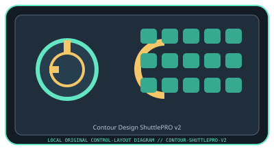

[ SPECIALIZED INPUT CONTROLLERS // IDENTIFIED COMPONENT ]
Contour Design ShuttlePRO v2
Programmable multimedia editing controller with a jog/shuttle wheel and dedicated shortcut buttons.

MODEL IDENTIFICATION: ShuttlePRO v2. Confirm the full label, revision, region, included accessories, and software generation against the physical unit before use.
Model specifications
| Catalog leaf | Specialized input controllers |
|---|---|
| Exact model / identifier | ShuttlePRO v2 |
| Control inputs / sensors | Fifteen programmable buttons plus an inner jog wheel and spring-centered outer shuttle ring. Jog rotation is continuous; the shuttle ring returns toward center and provides variable shuttle input. No camera or biometric sensors. |
| Connection / protocol | USB-A wired connection; host sees programmable keyboard shortcuts and/or supported control events through the Shuttle driver. It does not carry audio. Adapter needs and OS input permissions vary by computer. |
| Driver, software, and host compatibility | Contour Shuttle driver/configuration software provides application-specific button and wheel profiles for supported Windows/macOS hosts. Functionality depends on the editor application and profile; confirm current driver support before relying on legacy workstation software. |
| Setup / calibration | Install the current Contour Shuttle driver, connect the controller, select the target application profile, and configure/test the jog and shuttle separately. Adjust shuttle response/threshold in the configuration utility if offered; there is no physical sensor calibration. Verify that shortcuts match the active application before editing. |
Safety and preservation
Use on a stable surface and do not force the shuttle ring past its intended travel or pull up on the jog wheel. Keep liquids and grit away from moving controls; unplug before cleaning. Review macros before use to prevent accidental edits or destructive commands.
Record observed condition, host OS, application/driver version, firmware, accessories, and test conditions separately from manufacturer claims.
Primary manufacturer sources
- Contour Design ShuttlePRO v2 product pageManufacturer product specifications and hardware control description.
- Contour Design Shuttle manuals and downloadsManufacturer manuals, driver downloads, and setup materials for Shuttle controllers.
Specifications and software support can change by revision and host OS. Verify the exact unit and applicable manual before service or deployment.